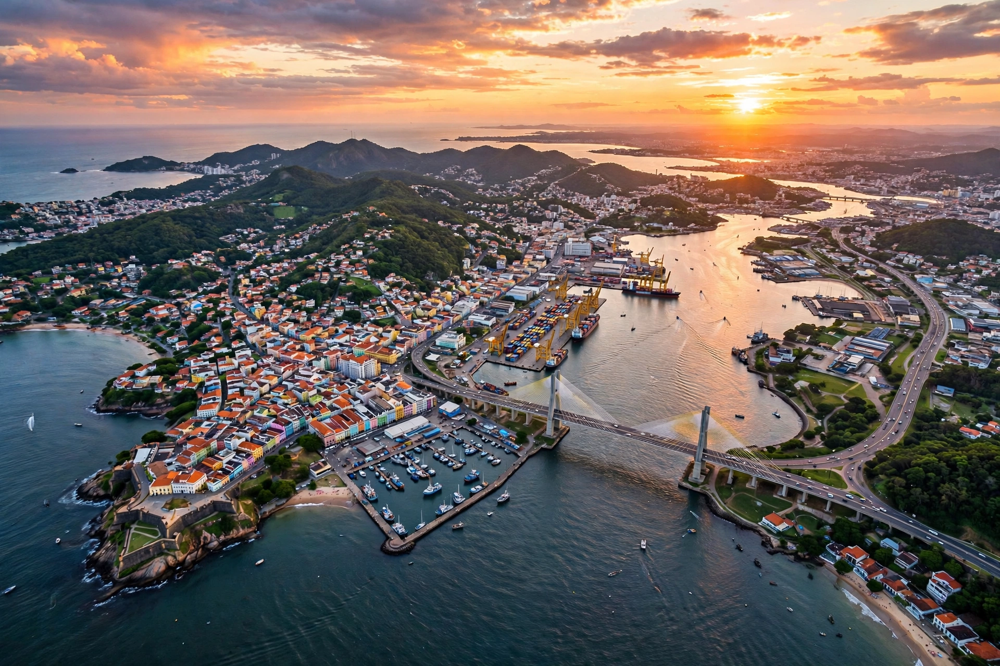

Espírito Santo
| Espírito Santo | |
 | |
| Country | Brazil |
|---|---|
| Capital & largest city | Vitória |
| Area | c. 46,095 km² |
| Population | c. 4.1 million (2022 census) |
| Abbreviation | ES |
Espírito Santo (Portuguese for "Holy Spirit") is a state in southeastern Brazil, bordered by Bahia to the north, Minas Gerais to the west, Rio de Janeiro to the south, and the Atlantic Ocean to the east. Its capital and largest city is Vitória, a port built on an island in a bay shared with Vila Velha and Cariacica.
History
The captaincy of Espírito Santo was granted to Vasco Fernandes Coutinho, who landed in 1535 at the site of present-day Vila Velha. Vitória was founded in 1551 after the settlers moved to the island for defence against indigenous and French and Dutch attacks. The state's inland remained lightly colonised until coffee expansion and Italian and German immigration in the 19th century populated the mountainous interior.
Economy
Espírito Santo is a major exporter: the port complex of Tubarão in Vitória is among the world's largest iron-ore export terminals, operated in connection with Vale's mines in Minas Gerais. The state is also Brazil's leading producer of marble and granite, a significant coffee (conilon/robusta) and papaya producer, and has growing oil and natural gas output from offshore Campos basin fields.
See also
Vila Velha · List of state capitals in Brazil
Recreated from memory as a standalone page.